Multicycle RISC-V processor
November 2026 · SystemVerilog, RISC-V assembly, iCE40 UP5K (iceBlinkPico), Icarus Verilog, yosys, nextpnr
Code on GitHub
A 32-bit RISC-V processor in SystemVerilog, running on the iceBlinkPico, an iCE40 UP5K
FPGA board with a 12 MHz clock. It implements the RV32I base integer instructions except
ecall, ebreak and the CSR instructions, which the project left
out. It is a multicycle design: it works on one instruction at a time, and each takes 4
clock cycles, or 5 for a load. Built for Olin’s computer architecture course,
after the FPGA LED mini-projects and
Conway’s Game of Life .
From the demo clip: the processor running its LED program on the board,
stepping the RGB LED from red to green to blue every half second.
Clock 12 MHz on the board; place and route reports a maximum of 15.95 MHz Cycles per instruction 4, or 5 for a load; 4.10 on average over the test program FPGA resources 4,395 of 5,280 logic cells (83%) and 16 of 30 block RAMs Memory 4 kB of instructions from 0x1000 and 4 kB of data from 0x0000, with LED and timer registers at the top of the address space Simulation 35 of 35 checks pass, across every instruction class On the board An assembly program that cycles the RGB LED, timed by a memory-mapped millisecond counter
State machine
Every instruction steps through the same states. Four registers carry values from one
cycle to the next: the program counter, the instruction, the ALU result and the branch
decision.
State What happens
FETCH The program counter addresses instruction memory, and the block RAM reads the word on the clock edge. DECODE The instruction word is captured. EXECUTE The control unit decodes the instruction, the register file is read and the ALU computes. The result and the branch decision are stored. MEM A store writes data memory. Every instruction except a load writes its destination register, if it has one, and updates the program counter. A load sends its address to data memory. WB Loads only: the loaded value is written to the register file and the program counter moves on by 4.
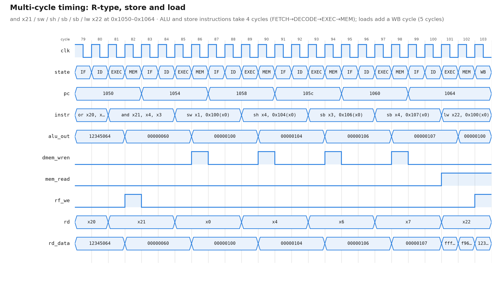
An ALU instruction, four stores and a load in simulation. Each takes 4 cycles
except the load, which adds WB. The and writes its register in MEM
(rf_we), each store writes data memory in MEM (dmem_wren), and
the load writes x22 in WB.
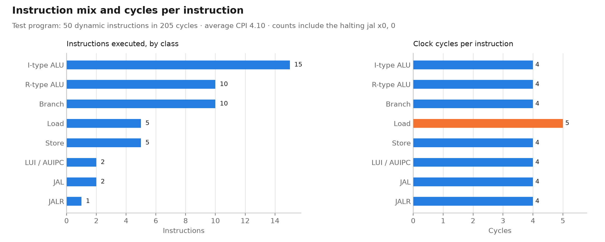
The test program runs 50 instructions in 205 cycles, an average of 4.10 cycles
per instruction. Only the five loads take 5.
Datapath
The ALU’s first operand is rs1, the program counter (for auipc) or
zero (for lui). The second is rs2 or the immediate. R-type and I-type
arithmetic use {funct7[5], funct3} directly as the ALU operation; loads,
stores, jumps and U-type instructions add.
The next program counter is PC + 4, PC + immediate for a taken branch or
jal, or rs1 + immediate with the low bit cleared for jalr.
The destination register gets the ALU result, the loaded data, or PC + 4 for a jump.
The memory module handles byte and half-word sizes and sign extension.
For a branch the ALU subtracts rs2 from rs1, and a small branch unit decides all six
branch types from the ALU’s flags.
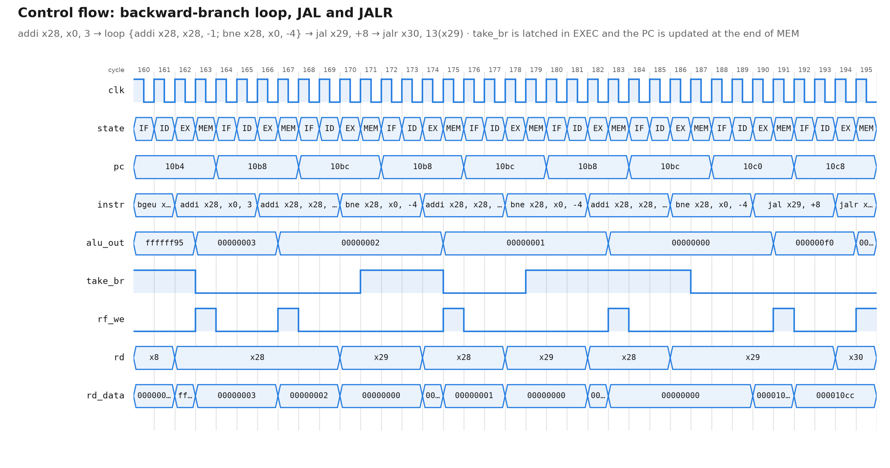
A backward loop, jal and jalr in simulation. The
branch decision (take_br) is stored in EXEC and the program counter changes
at the end of MEM. The bne jumps back to 0x10b8 twice and falls through the
third time; jal jumps to 0x10c8, and both jumps write their return
addresses.
// BEQ=zero, BNE=~zero, BLT=n^v, BGE=~(n^v), BLTU=carry, BGEU=~carry
// funct3[2:1] picks the condition, funct3[0] inverts it
always_comb begin
case (funct3[2:1])
2'b00: cond = zero; // BEQ / BNE
2'b10: cond = negative ^ overflow; // BLT / BGE
2'b11: cond = carry; // BLTU / BGEU
default: cond = 1'b0;
endcase
end
assign take_branch = cond ^ funct3[0];From branch_unit.sv. For the unsigned branches, carry is the borrow out of the subtraction.
Testing
The testbench loads a 54-instruction program, runs it until it reaches its halt loop
(jal x0, 0) and compares the registers, data memory and LED register with
values worked out by hand. The test values 100 and −7 make signed and unsigned
comparisons, and logical and arithmetic shifts, give different answers. Every taken
branch and jump should skip an instruction that adds 1 to x31, so x31 = 0 at the end
shows that each one landed on the right target.
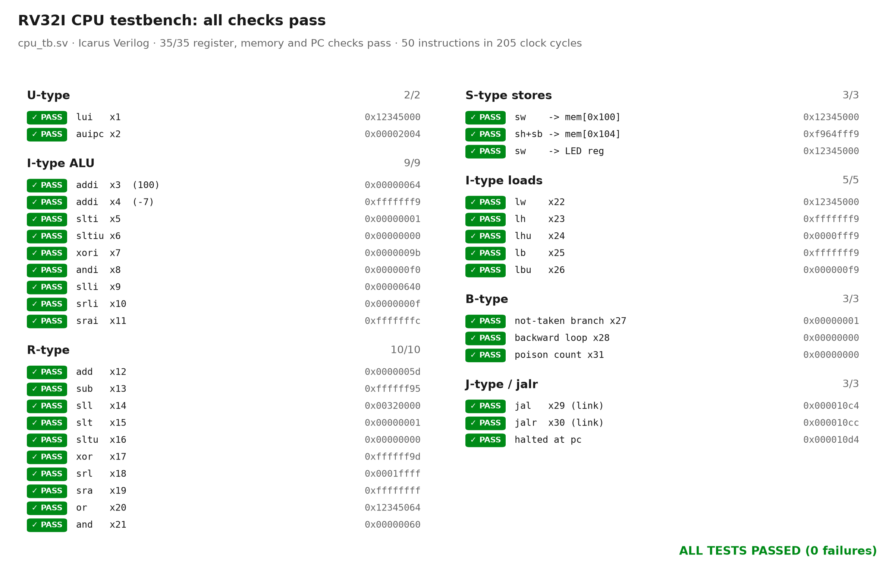
All 35 checks pass with make test in Icarus Verilog.
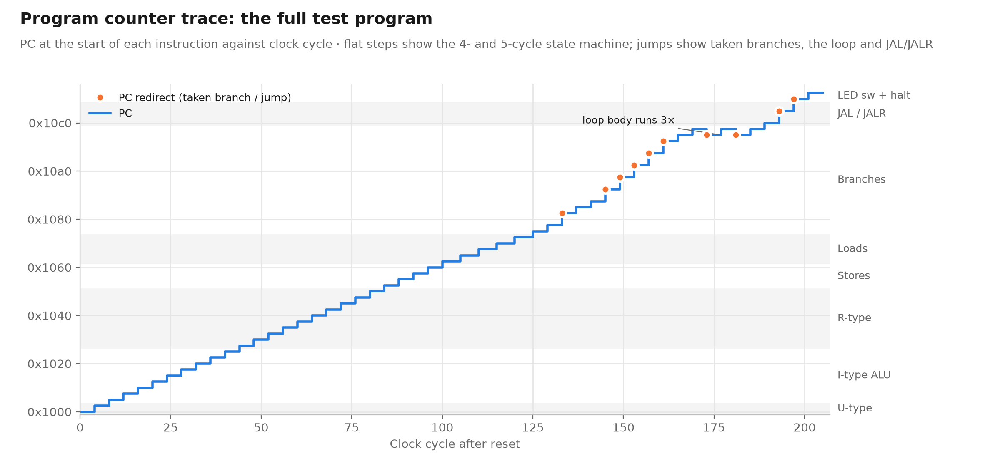
The program counter through the whole test program. Each flat step is one
instruction’s 4 or 5 cycles, and the orange dots are taken branches and jumps,
including the loop that runs 3 times.
FPGA implementation
The finished design uses 83% of the iCE40’s logic cells, and place and route
reports a maximum clock of 15.95 MHz, 33% above the board’s 12 MHz. The 16 block
RAMs hold the 4 kB instruction and data memories. The register file takes the most
logic: its two read ports are combinational, which iCE40 block RAM can’t provide,
so it is built from logic cells instead.
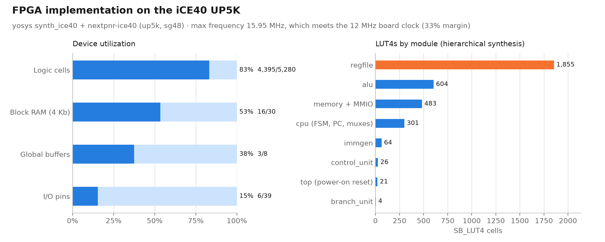
Device use after yosys and nextpnr, and LUTs per module from a hierarchical
synthesis run.
From simulation to the board
On the board the processor runs a 13-instruction program. It writes full brightness to
the red byte of the LED register, waits 500 ms by polling the millisecond timer, then
shifts the value right by 8 bits to move on to green and then blue.
1000: li s0, -4 # s0 = 0xFFFFFFFC (LED register)
1004: li s1, -8 # s1 = 0xFFFFFFF8 (millisecond timer)
1008: li s2, 500 # delay in ms
100c: li t1, 0x00FF0000 # red at full brightness
1010: loop: sw t1, 0(s0) # update LEDs
1014: lw t0, 0(s1) # t2 = now + 500
1018: add t2, t0, s2
101c: wait: lw t0, 0(s1)
1020: blt t0, t2, wait # wait 500 ms
1024: srli t1, t1, 8 # red -> green -> blue -> 0
1028: bnez t1, loop
102c: li t1, 0x00FF0000 # back to red
1030: j loopThe LED program (program/prog.hex), as listed in the project report.
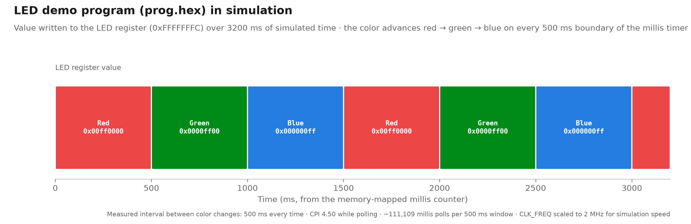
The LED program in simulation: the colour changes on every 500 ms boundary of
the millisecond timer. For a shorter run, the simulation tells the memory module the
clock is 2 MHz, so a millisecond takes 2,000 cycles instead of 12,000.
The processor passed simulation well before it ran this program. Three more problems
came up on the way to the board:
The program was never loaded. The memory module fills instruction
memory from four files, one per byte lane, and they didn’t exist yet. The
program was assembled and split into those files.The design missed timing. Place and route reported a maximum clock
of 11.73 MHz, under the board’s 12 MHz. Removing two rotate operations from the
ALU and sharing one right shifter only reached 11.74 MHz, so the ALU was not the slow
path. That path ran from the register file through the ALU into the memory address
and next-PC logic, all in one cycle. Storing the ALU result and branch decision at the
end of EXECUTE, and acting on them in a new MEM state, met timing at the cost of one
cycle per instruction.The LED stayed dark , although simulation showed the processor
writing the LED register. Temporary debug logic in the top level narrowed it down,
with one rebuild per test.
Debug test Result Conclusion
User LED driven by a counter, no CPU involved Blinked The bitstream, clock and flashing all work Blue LED driven by the counter Blinked The RGB pins work as ordinary outputs User LED latched on when the CPU stores to the LED register Stayed off The processor never reaches that store on the board
The cause is a property of the iCE40: its block RAM doesn’t return valid data for a
few microseconds after the chip is configured, and the processor started fetching at once.
Those first fetches read as zero, which it runs as a no-op, so it skipped the
instructions that load the LED and timer addresses. Its stores then went to data address
0, and the delay loop read address 0 instead of the timer. Simulation doesn’t model
the start-up delay, which is why the testbench passed. A power-on reset fixed it:
// Power-on reset: iCE40 block RAM reads are not valid for a few microseconds
// after configuration, so hold the CPU in reset for ~2.7 ms (2^15 cycles at 12 MHz).
logic [15:0] por_count = 0;
logic cpu_reset;
always_ff @(posedge clk)
if (!por_count[15]) por_count <= por_count + 1;
assign cpu_reset = ~por_count[15];From top.sv.
Pong on an FPGA with HDMI output
November 2026 · SystemVerilog, Vivado, Vivado simulator, Xilinx Zynq-7020 (PYNQ-Z2)
Code on GitHub
Demo on YouTube
Two-player Pong in SystemVerilog for the PYNQ-Z2, a board built around a Xilinx
Zynq-7020. The FPGA produces 640×480 video at 60 Hz and drives the board’s
HDMI port itself: it makes its own pixel clock, encodes each colour channel as TMDS
symbols and shifts them out at ten times the pixel rate. Each player has two of the
board’s four buttons, and the first to 9 points wins.
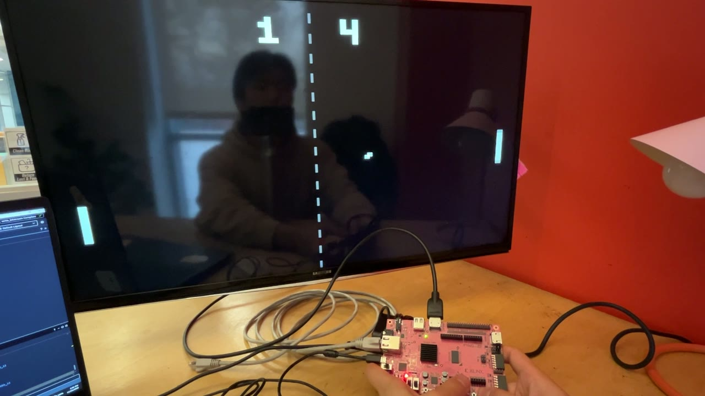
Play video 2:48
Games played on the board’s buttons, with the score at the top of the screen.
Video 640 × 480 at 60 Hz, or 800 × 525 pixel clocks per frame with blanking Clocks The 125 MHz board clock feeds an MMCM, which makes a 25.2 MHz pixel clock and a 126 MHz clock for the serializers FPGA resources 457 LUTs (0.86%) and 214 flip-flops (0.20%), with no block RAM or DSP slices Timing All constraints met Tests Six self-checking testbenches in the Vivado simulator, all passing
How it works
sysclk 125 MHz --> MMCM --> clk_pix 25.2 MHz / clk_5x 126 MHz
|
buttons --> debounce --> pong_game --> pong_renderer --> hdmi_tx --> HDMI OUT
^ ^
+-- video_sync -+The block diagram from the README. Everything runs on the 25.2 MHz
pixel clock except the serializers in hdmi_tx.
Video timing
video_sync counts 800 pixel clocks per line and 525 lines per frame: the
640×480 picture plus blanking and sync pulses. Once per frame, at the start of
vertical blanking, it pulses frame_tick. The game state only changes then,
so nothing moves while a frame is being drawn.
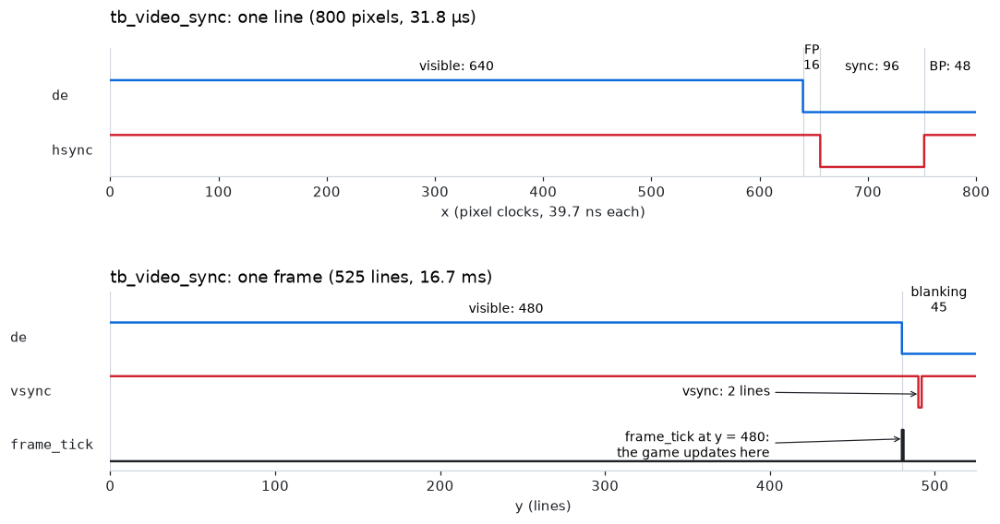
One line and one frame from tb_video_sync.
Drawing each pixel
pong_renderer has no frame buffer. For each pixel it tests whether (x, y) is
inside the ball, a paddle, the net or a lit cell of a score digit, and registers the
colour.
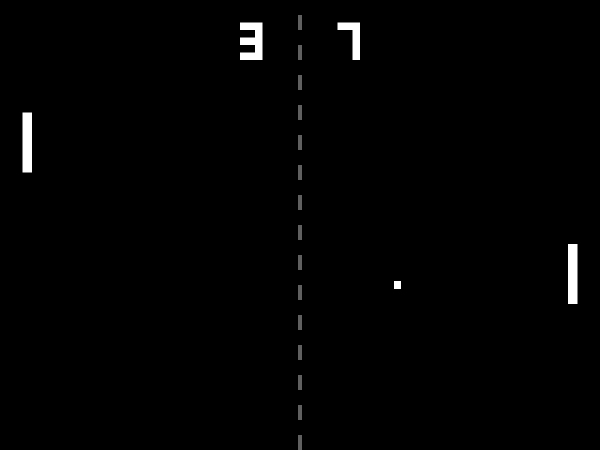
The renderer’s output for every pixel of one frame, from
tb_pong_renderer. The digits are a 3×5 font drawn 8 times
larger.
Game logic
pong_game moves the ball 4 pixels and the paddles 6 pixels per frame. The
ball bounces off the top and bottom edges and off the paddles. Where it strikes a paddle
sets its new vertical speed: the distance from the paddle’s centre divided by 8,
from −5 to +4 pixels per frame, so hits near the ends leave at a steeper angle. A
hit is detected when the ball crosses the paddle’s face during a frame, not from
its position alone, so a fast ball can’t pass through a paddle between frames. A
miss scores a point for the other player, and the next serve goes toward the player who
lost it.
Part of the 4,000-frame rally between two computer players in
tb_pong_game, ending with a point the left player misses on purpose. The
positions and scores come from the RTL simulation; a Python script draws them with the
renderer’s shapes and checks that its drawing matches the RTL frame above, pixel
for pixel.
// Paddles: the ball crosses the paddle face this frame while overlapping
// it. Checking the crossing (not just the position) means a fast ball can
// never skip through a paddle.
if (vx < 0 && bx >= L_FACE && nx < L_FACE && overlaps(ny, lp)) begin
nx = L_FACE; nvx = -vx; nvy = bounce_vy(ny, lp, vy);
end else if (vx > 0 && bx + BALL_SIZE <= R_FACE && nx + BALL_SIZE > R_FACE && overlaps(ny, rp)) begin
nx = R_FACE - BALL_SIZE; nvx = -vx; nvy = bounce_vy(ny, rp, vy);
end else if (nx < 0) begin
point_r = 1'b1; // left player missed
end else if (nx > SCREEN_W - BALL_SIZE) begin
point_l = 1'b1; // right player missed
endFrom rtl/pong_game.sv.
HDMI output
hdmi_tx encodes each 8-bit colour as a 10-bit TMDS symbol. Two chained
OSERDES blocks per lane shift the symbols out on both edges of the 126 MHz clock, so each
pixel’s 10 bits leave within one pixel clock, at 3.97 ns per bit. A fourth lane
carries the pixel clock. Like DVI, the output is video only, with no audio.
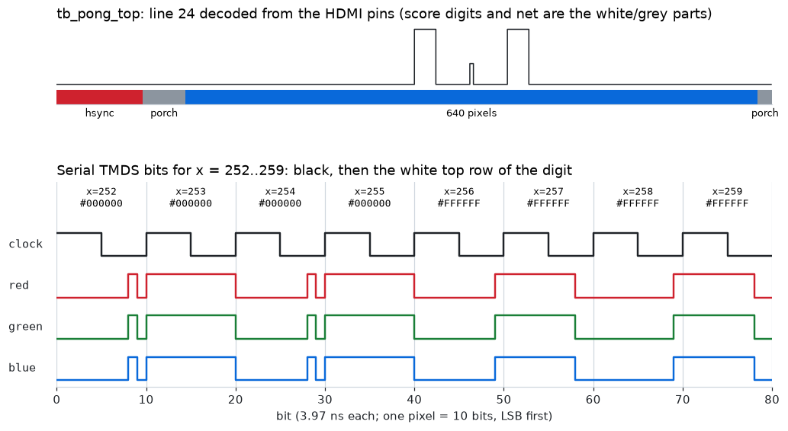
The HDMI pins in tb_pong_top, which runs the whole design with
Xilinx’s models of the clock manager and serializers, decoded back into pixels.
Top: line 24, with its blanking, the score digits and the net. Bottom: the serial bits on
each lane where the left score digit starts, at x = 256.
The encoding also keeps each lane DC-balanced. The encoder tracks the running count of
ones minus zeros and inverts a symbol’s data bits when that pulls the count back
toward zero.
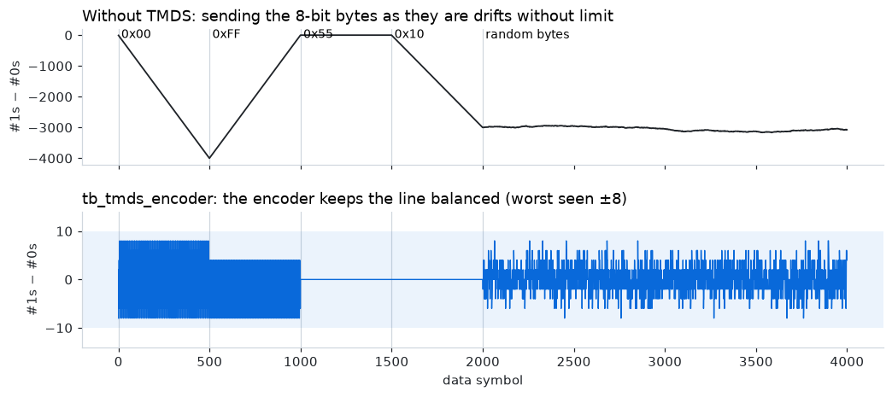
From tb_tmds_encoder. Sent as plain bytes, the count drifts
without limit; the encoder keeps it within ±8.
Buttons
Each button passes through a two-flip-flop synchronizer, then a counter that only lets a
new level through once it has held for 250,000 clocks, or 10 ms.
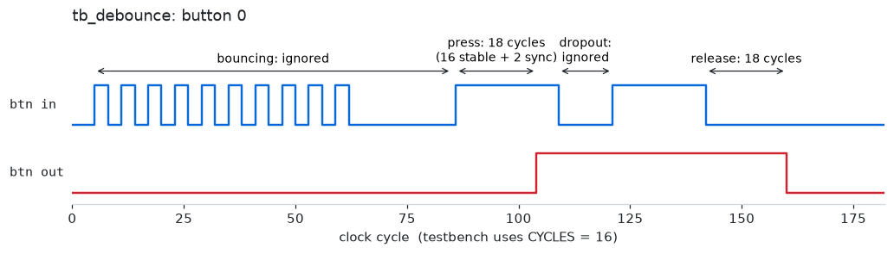
tb_debounce, with the count cut to 16 cycles. Bouncing and a
short dropout are ignored, and a steady press or release comes through 18 cycles later:
16 stable cycles plus 2 in the synchronizer.
Testing
Each part of the design has a self-checking testbench for the Vivado simulator, and the
last one runs the whole design. All six pass.
Testbench What it checks
tb_video_syncEvery pixel of two frames: the position counters, the visible area, the sync pulses and frame_tick tb_debounceBounces and short glitches are ignored, and a steady press comes through tb_tmds_encoderEvery data symbol decodes back to its byte, and the DC balance stays within ±10 (the largest seen was 8) tb_pong_gamePaddle limits, serves, scoring, game over and restart, then a 4,000-frame rally between two computer players: 14 hits on each paddle, 38 off the walls and 8 different vertical speeds tb_pong_rendererThe edges of the ball, paddles and net, every score digit, and the one-clock delay through the renderer tb_pong_topThe whole design, with Xilinx’s models of the clock manager and serializers. The bench works as an HDMI receiver: it decodes the serial pins and checks the line timing and every pixel of the first 48 lines, with none wrong.
Conway’s Game of Life on an FPGA
October 2026 · SystemVerilog, iCE40 UP5K (iceBlinkPico), Icarus Verilog, GTKWave, yosys, nextpnr
Code on GitHub
Demo on YouTube
Conway’s Game of Life on an 8×8 WS2812B LED matrix, driven by an iCE40 UP5K
FPGA at 12 MHz. The whole design is one SystemVerilog module, with a single output pin
feeding the LEDs’ data line. It differs from the original game in two ways: the
board wraps around at the edges, so patterns never fall off, and each generation is
drawn in the next of eight colours.
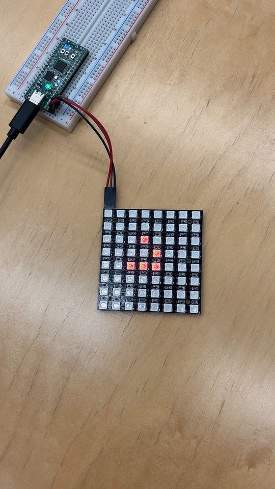
Play video 0:11
A glider moving across the board, one colour per generation.
Clock 12 MHz, so one tick is 83.3 ns Board A 64-bit register, 8 × 8, wrapping at the edges Update All 64 cells on a single clock edge LED bit timing 1.25 µs per bit, high for 0.75 µs for a 1 and 0.33 µs for a 0 Speed One generation about every 177 ms, or 5.7 per second
Board and update rule
Cell (x, y) is bit y·8 + x of the board register. To count a cell’s
neighbours, a function splits its index into a 3-bit x and y and forms x±1 and
y±1 in 3-bit arithmetic. That arithmetic overflows on its own (7 + 1 = 0,
0 − 1 = 7), which is what makes the board wrap, with no extra logic.
x = idx[2:0]; // x pos of LED index
y = idx[5:3]; // y pos of LED index
xm = x - 3'd1; xp = x + 3'd1; // 3-bit math -> wraps 0<->7
ym = y - 3'd1; yp = y + 3'd1;From count_neighbors in top.sv. Each neighbour’s index is then the concatenation {row, col}.
A for loop over the 64 cells applies the rule. Synthesis unrolls it into
64 neighbour counters that work in parallel, and because every cell is written with a
nonblocking assignment on the same clock edge, each new cell is computed from the old
generation only.
for (int i = 0; i < 64; i++) begin
n = count_neighbors(i,alive);
alive[i] <= (n==3) || (alive[i] && n==2);
endLED driver
Four counters walk through a frame: ticks within a bit (0 to 14), bits within an LED
(0 to 23), ticks within an LED (0 to 359) and LEDs along the chain (0 to 63). The data
line is high for 9 of a bit’s 15 ticks for a 1 and for 4 ticks for a 0, which fits
the WS2812B timing spec.
// push the data to LED
assign _31b = sending & (bit_now ? (tick_bit < 9) : (tick_bit < 4));
Between frames the line stays low for 2,097,151 ticks, about 175 ms. That is far longer
than the LEDs’ 50 µs latch time, and it also sets the speed of the animation.
Simulation
A testbench runs the design in Icarus Verilog with a 12 MHz clock for 0.5 s of simulated
time and dumps every signal for GTKWave. It cuts the wait between frames to 200 ticks so
that many generations fit in the run, without touching the Life logic.
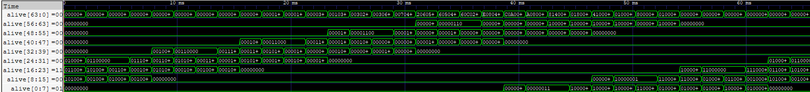
The board register in GTKWave, one trace per row (scroll sideways to follow it).
The glider’s cells move from row to row as generations advance, and wrap from the
top row back to row 0.
Archerfish LED tracker
October 2026 · Arduino (C++), Python, pyserial, servos, phototransistors, laser diode, Adafruit Motor Shield
Code on GitHub
Demo on YouTube
A 3D-printed archerfish that hunts an LED the way the real fish shoots insects down with
a jet of water. Four phototransistors in its mouth sense where the light is, a pan servo
and a tilt servo turn the fish toward it, and once it is lined up a laser diode fires at
the target. A motor then turns the target wheel so the LED ends up somewhere new. The
third mini-project for Olin’s Principles of Integrated Engineering course, after
the infrared scanner .
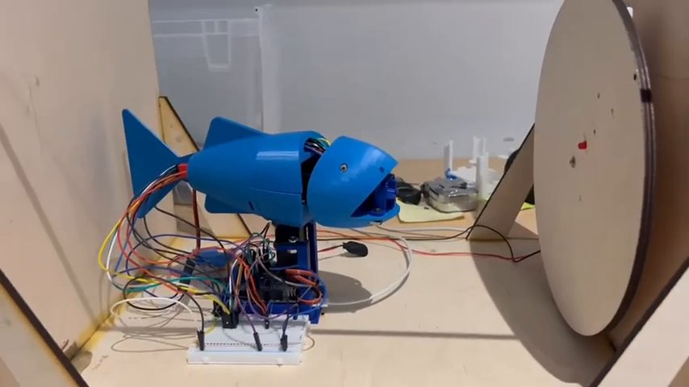
Play video 0:44
The demo: the setup, a close-up of the sensors, then tracking with the lights off.
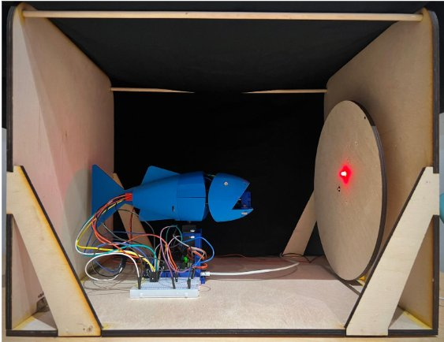
The finished build. The LED is on the wooden wheel at the right.
How it works
The four phototransistors sit in a 2×2 square. The pointing error on each axis
is the difference between the left and right columns, or the top and bottom rows,
divided by the total reading.
On every loop the servos step toward the LED in proportion to the error: at least
1 degree, so small errors don’t round to zero, and at most 5. If the four
sensors together see too little light, the fish stays still instead of chasing noise.
When both errors are under 0.02, the fish tilts up 10 degrees, because the laser
otherwise hits below the LED, fires for one second and tilts back. If the servos reach
their limits before it lines up, it fires from there.
The motor then turns the target wheel for a random time of up to two seconds, and the
next round starts when you press Enter in the Serial Monitor.
The sensor plate in the fish’s mouth, and the servo that tilts the head.
int trackStep(float diff) {
if (fabs(diff) < FOUND_THRESHOLD) return 0;
int step = round(diff * TRACK_GAIN);
if (step == 0) step = (diff > 0) ? 1 : -1;
return constrain(step, -MAX_DEGREE_JUMP, MAX_DEGREE_JUMP);
}The servo step for one axis, from tracking_mechanism/tracking_mechanism.ino.
TRACK_GAIN is 30 degrees per unit of error, FOUND_THRESHOLD is 0.02
and MAX_DEGREE_JUMP is 5.
Calibration and testing
No two phototransistors read quite the same, so a Python script records three runs over
serial: with the LED off, to find each sensor’s offset; with the LED straight ahead,
to find gains that make all four agree; and with the LED at its farthest, to set the
minimum brightness worth tracking. It writes the results into a header file that the
firmware includes.
A separate test sketch checks each subsystem from the Serial Monitor: servo sweeps, live
sensor readings, tracking with the laser and motor off, a servo stress test that catches
brownouts, a motor speed ramp and the laser.
Mechanical design
The CAD model inside its enclosure, and a see-through view of the servos in the body and the mount.
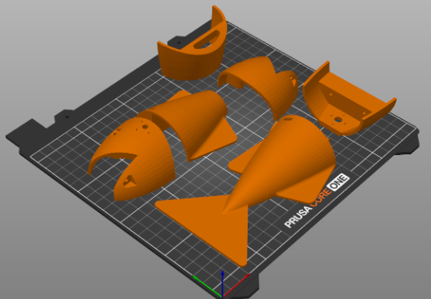
The fish’s parts laid out for printing.
Pan/tilt infrared scanner
September 2026 · Arduino (C++), Python, pyserial, NumPy, matplotlib
Code on GitHub
An Arduino Uno sweeps a Sharp GP2Y0A02YK0F infrared distance sensor on a pan servo and a
tilt servo, and streams the readings to a laptop over serial. Python calibrates the
sensor and turns each scan into a depth map of the object in front of it. A mini-project
for Olin’s Principles of Integrated Engineering course.
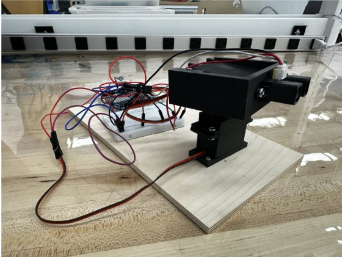
The scanner. The sensor rides on two stacked servos, with the Arduino and breadboard behind.
Hardware
Two 3D-printed holders stack the servos, so the pan servo turns the tilt servo and the
sensor together. The pan servo is on pin 9, the tilt servo on pin 10 and the
sensor’s analog output on A0.
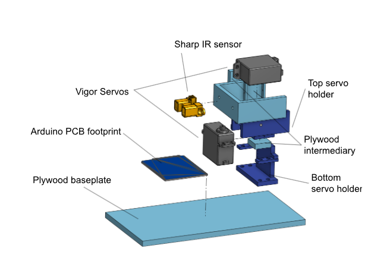
Exploded view of the mount.
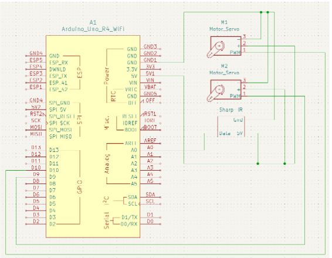
The schematic: two servos and the sensor on the Arduino.
How it works
The firmware answers short serial commands at 115,200 baud: ping, move, read, scan
and abort. Each scan point is the median of 5 readings, taken after the servo has
had time to settle, and every row is swept left to right so the rows line up.
The sensor’s output falls off nonlinearly with distance. Calibration fits a
straight line in log-log space to readings at known distances, and a verify mode
checks the fit at distances that weren’t used to make it.
The two servo angles and the distance are converted to x, y and z coordinates.
The plotting script separates the object from the wall behind it with an Otsu-style
threshold on depth, and draws the scan as a depth map.
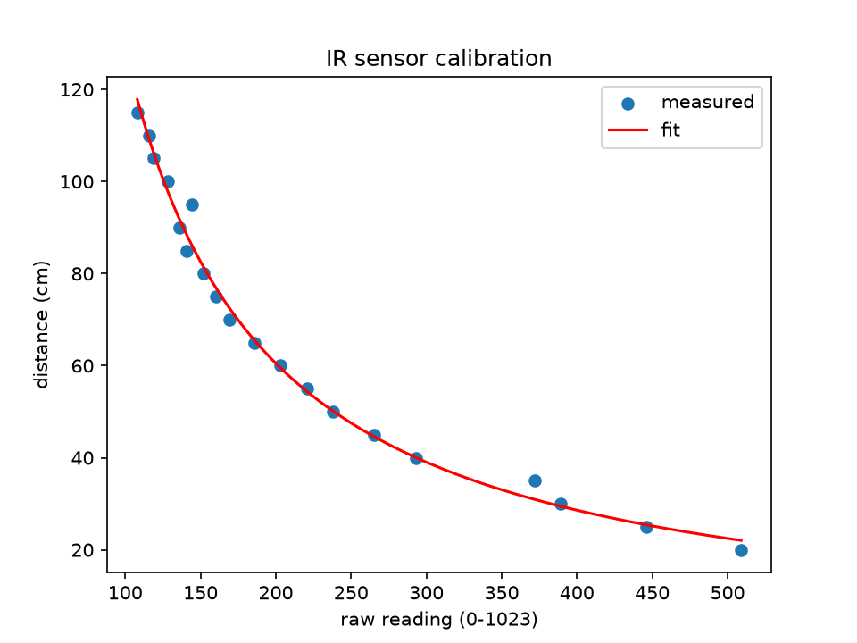
Sensor calibration: 20 measured distances from 20 to 115 cm, fitted with
distance = a · rawb , where a = 18,595 and b = −1.081.
def to_xyz(pan, tilt, dist):
"""Servo angles + distance -> x (right), y (up), z (straight ahead), in cm."""
p = np.radians(PAN_SIGN * (np.asarray(pan) - PAN_HOME))
t = np.radians(TILT_SIGN * (np.asarray(tilt) - TILT_HOME))
x = dist * np.cos(t) * np.sin(p)
y = dist * np.sin(t)
z = dist * np.cos(t) * np.cos(p)
return x, y, zFrom python/scanner_common.py.
FPGA LED mini-projects
September to October 2026 · SystemVerilog, yosys, nextpnr, icepack, dfu-util
Mini-project 1 on GitHub
Mini-project 2 on GitHub
Two small SystemVerilog designs for the iceBlinkPico, an iCE40 UP5K FPGA board, both
driving its RGB LED. They are synthesised with yosys, placed and routed with nextpnr,
and loaded onto the board over USB. The third mini-project in the series is
Conway’s Game of Life .
The demo clip from the mini-project 1 repository: the design running on the board.
Mini-project 1: colour cycle
A counter advances a colour index every 2,000,000 clock cycles, and a lookup turns the
index into one of six colours: red, yellow, green, cyan, blue and magenta. The LED
outputs are active-low.
Mini-project 2: PWM fade
The same six-stage walk around the colour wheel, but each channel is driven by pulse-width
modulation so the colours fade into each other. Each stage is split into 200 steps. On
every step one channel’s duty value rises or falls by 6 out of a 1,200-cycle PWM
period, while the other two hold.
always_ff @(posedge clk) begin
if (pwm_count == PWM_INTERVAL - 1)
pwm_count <= 0;
else
pwm_count <= pwm_count + 1;
end
// LED is on while count < value
assign RGB_R = ~(pwm_count < red_pwm_value);
assign RGB_G = ~(pwm_count < green_pwm_value);
assign RGB_B = ~(pwm_count < blue_pwm_value);From rgb_fade.sv.
Monopoly RL agent
June to August 2026 · Python, PyTorch, sb3-contrib (MaskablePPO), Gymnasium, pygame
Full write-up
Code on GitHub
A complete Monopoly rules engine written in the Python standard library, wrapped as a
Gymnasium environment, with a MaskablePPO agent trained on it by self-play and a pygame
GUI for playing against the result. Buying, auctions, building, jail and cash management
are learned from the reward of winning games. Trading is the exception: it runs on a
hand-written heuristic engine.
Win rate against the heuristic bots 31.5% (63 of 200 games), 95% CI 25.5% to 38.2%. Chance is 25%. Timeouts None in 200 evaluation games Monopolies completed in self-play 2.77 for winners, 1.89 for losers Observation and action space 261 features, 125 discrete actions, illegal actions masked Tests 94 passing
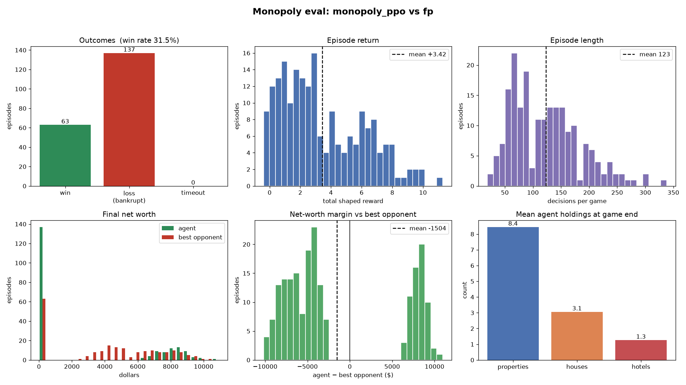
200 four-player games against the three heuristic bots. Outcomes are bimodal:
the agent either finishes well ahead or goes bankrupt.
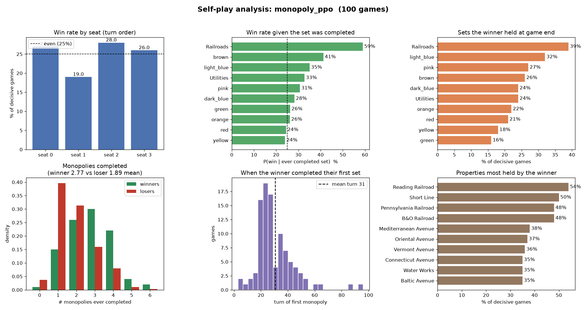
100 self-play games with all four seats on the model. Winners complete more
sets than losers, and almost every winner holds at least one.
How it works
The environment steps at decision points. Dice, rent, cards and the opponents’
turns play out between steps on a background thread, so the agent sees the real
engine and not a re-implementation of it.
One encoder produces the observation, the legal-action mask and every valuation, for
training and for the GUI. A parity test fails if the two drift apart.
Exploits are fixed in the action mask, not the reward. Mortgage-flipping was first
penalised and came back as house-flipping. Those actions are now only legal during
forced liquidation.
Trading was moved out of the learned policy. The learned version accepted about 85%
of offers and passed one tile back and forth 424 times in a game. The heuristic
engine prices a trade per colour group and refuses to give away completed sets.
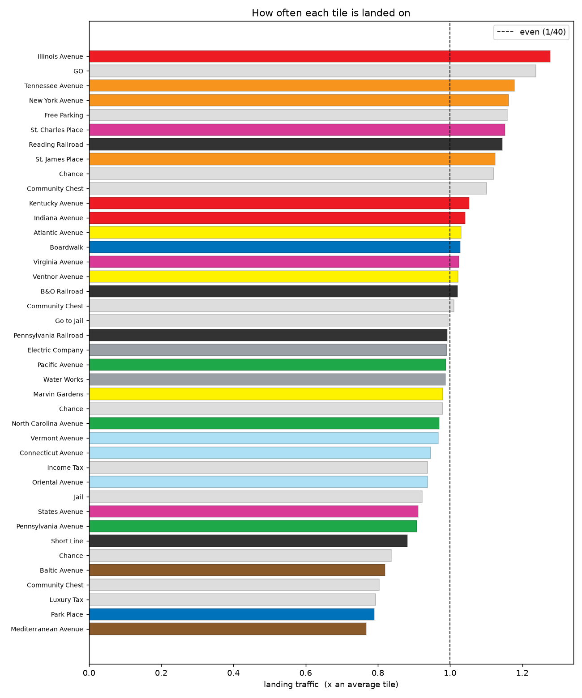
Landing frequency per tile, measured by simulation. It feeds the valuation
of each property set.
What doesn’t work yet
The agent plays recognisable Monopoly, but it is not clearly stronger than the bots it
trains against. Most of the write-up is about why.
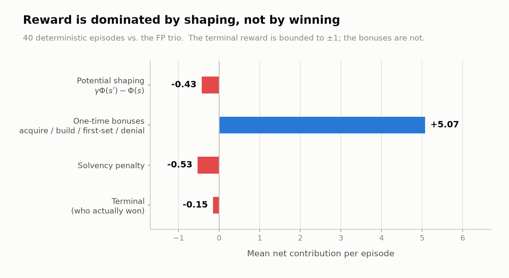
One-time bonuses for buying and building add 5.07 per episode, while the
win/loss signal is bounded to ±1. The agent is paid more for shopping than for winning.
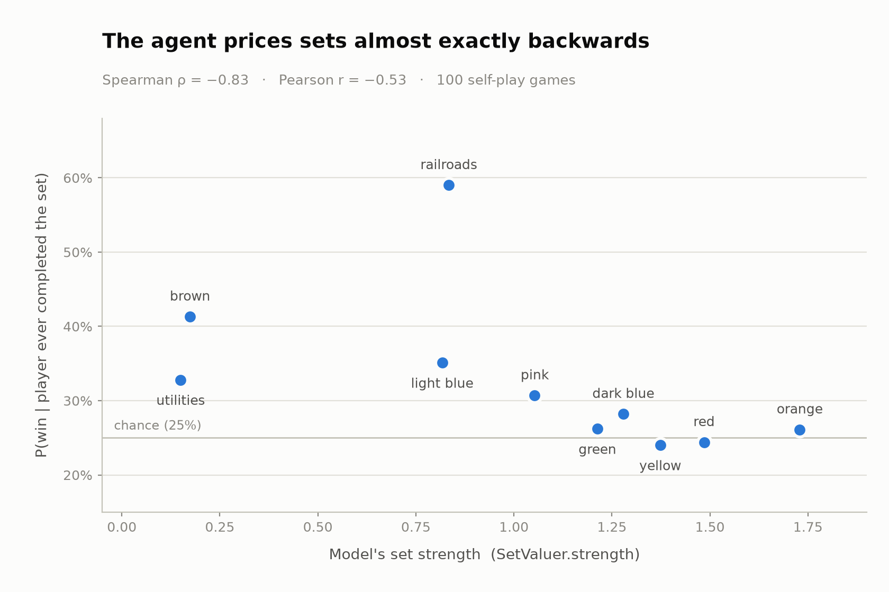
The hand-derived set valuation is negatively correlated with what actually
wins in self-play (Spearman ρ = −0.83).
The deployed checkpoint was also trained for 2 million steps against a planned 15 million,
so “heuristic trading hurt” and “the model is undertrained” cannot
be separated from the data so far.
Cart-pole swing-up
April 2026 · Python, Stable-Baselines3 (DQN), Gymnasium, pygame, pytest
Code on GitHub
Overview on YouTube
A DQN agent for the swing-up version of cart-pole: the pole starts hanging down, and the
agent has to swing it up and keep it balanced. The environment subclasses Gymnasium’s
CartPole with its own reset, an observation that encodes the angle as cosine and sine, and
a shaped reward. A pygame front end, organised as model, view and controller, lets you set
the pole’s length and mass and nudge it with the arrow keys while the agent is running.
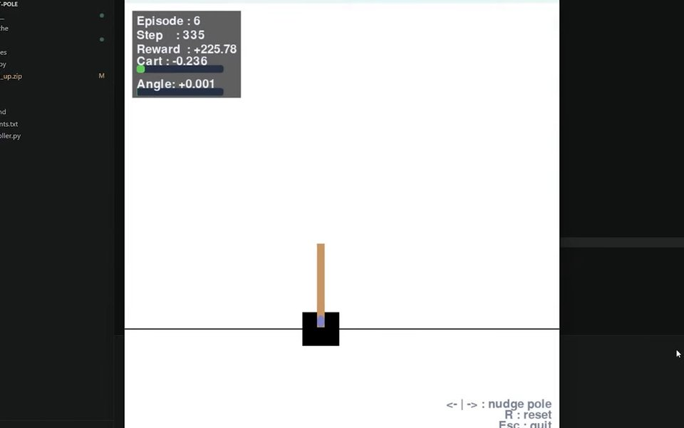
Play video 4:26
A walkthrough of the project: training, the trained agent swinging the pole
up, and changing the pole’s weight while it runs.
Reward
normalized_angle = abs(((pole_angle + np.pi) % (2 * np.pi)) - np.pi)
normalized_pos = abs(cart_pos) * np.pi / 2.4
total = (
((np.cos(normalized_angle) + 1) / 2)
* max(0.0, float(np.cos(normalized_pos)))
* np.cos(min(np.pi, abs(pole_vel) / 10.0))
)
reward = float(total - 0.1)
From model.py. The reward is a product of three terms (pole upright, cart
centred, pole not spinning) minus a small cost per step. Leaving the track costs a further 5.
Training
200,000 steps of DQN with an MLP policy and a learning rate of 0.001.
Replay buffer of 150,000 transitions, batches of 128.
Target network updated every 500 steps with τ = 0.5.
Exploration decays to 5% over the first tenth of training.
Delivery-robot feasibility map
June 2026 · Python, GeoPandas, laspy, React, Vite, MapLibre GL
Code on GitHub
Which streets in Somerville, Massachusetts can a sidewalk delivery robot actually drive?
This project combines Cyvl’s infrastructure data, LiDAR point clouds and open city
data into a score from 0 to 100 for every street segment, then shows the result on an
interactive map. It was built for the Cyvl AI Hackathon and was the winning entry.
The score
Metric Weight Source
Pavement condition (PCI) 30% Cyvl pavement layer Sidewalk width 25% LiDAR Slope 15% LiDAR Curb ramps 15% Cyvl above-ground assets Obstructions 10% Cyvl above-ground assets 311 complaints 5% City of Somerville open data
Segments scoring 70 or more are marked green (ready for robots), 40 to 70 yellow
(marginal) and under 40 red.
How it is built
A Python pipeline with one module per stage: load the Cyvl layers, build street
segments, measure width and slope from the point cloud, join curb ramps and
obstructions, count complaints, score, and export a single GeoJSON file.
A React and MapLibre app that colours each segment by its score. Hovering gives a
quick readout, clicking gives the full breakdown, and the sidebar filters by tier.
Grid load forecasting, Spain
March 2026 · Python, XGBoost, Optuna, pandas, matplotlib, seaborn
Code and essay on GitHub
Forecasts Spain’s hourly electricity demand from four years of ENTSO-E load data
(2015 to 2018), weather observations from five cities and electricity prices. The whole
thing is written up as a computational essay in a Jupyter notebook.
Model Test RMSE
Persistence baseline 1,422.40 MW Initial XGBoost 536 MW XGBoost tuned with Optuna 449.45 MW Improvement over the baseline 68.4%
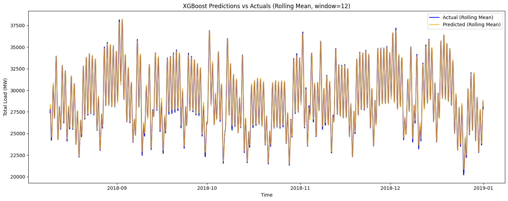
Predicted and actual load on the held-out final 10% of the data, shown as a
12-hour rolling mean.
Method
Energy and weather tables merged, with weather pivoted by city and 36 missing load
values filled by linear interpolation.
Lag features at 1 to 12, 24, 48, 168 and 336 hours, plus 24-hour and 168-hour rolling
statistics, hour, month, day of week and a business-day flag.
A chronological 90/10 split with no shuffling, so the model never trains on the future.
Two rounds of Optuna: 50 broad trials, then 20 in a narrowed search space.
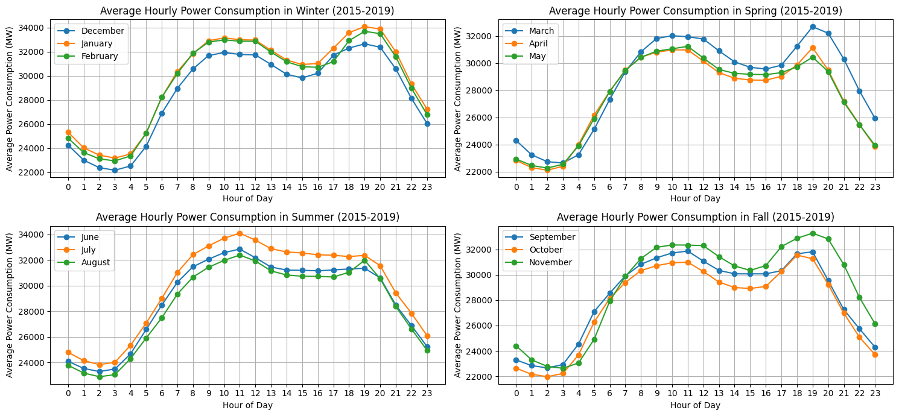
Average load by hour of day for each month. The daily shape changes with the
season, which is why hour and month are both features.
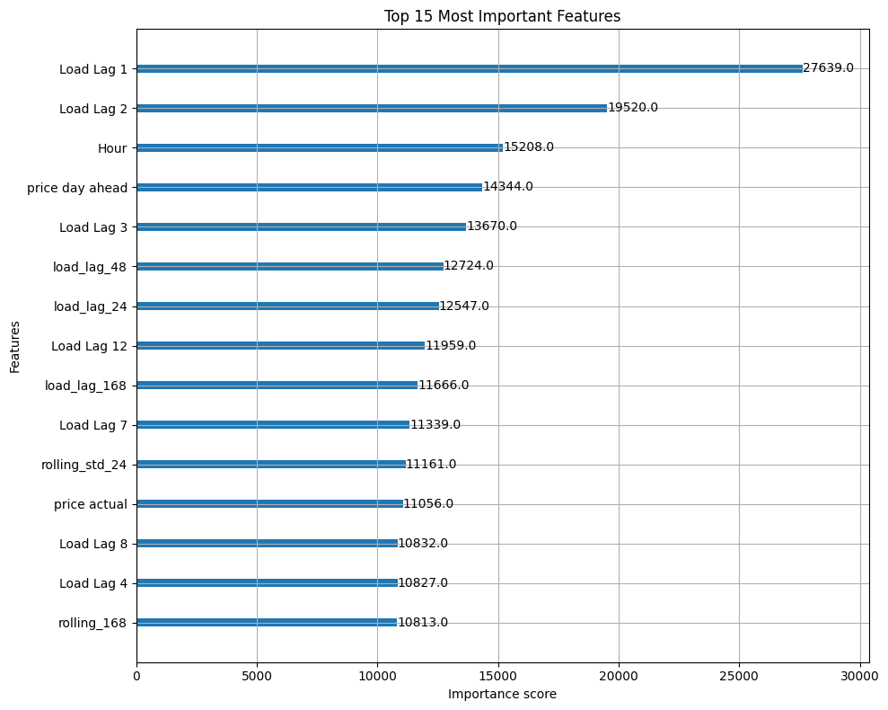
Top 15 features by XGBoost importance. The most recent load values dominate.
Limitations
Training RMSE is about 97 MW against 449 MW on the test set, so the model overfits.
Tree models also cannot extrapolate beyond load levels they have seen.
House price prediction (Kaggle)
March 2026 · Python, XGBoost, LightGBM, scikit-learn, Optuna, pandas
Code and essay on GitHub
An entry for Kaggle’s “House Prices: Advanced Regression Techniques”
competition, which asks for a sale price from 79 features of a house. The submission
blends gradient-boosted trees with regularised linear models and placed in the top 500
of more than 950,000 entrants. The work is written up as a computational essay.
Model Out-of-fold RMSE (log price, 5 folds)
XGBoost 0.1152 LightGBM 0.1158 XGBoost and LightGBM blended 0.1139 Ridge 0.1063 Lasso 0.1065 ElasticNet 0.1065
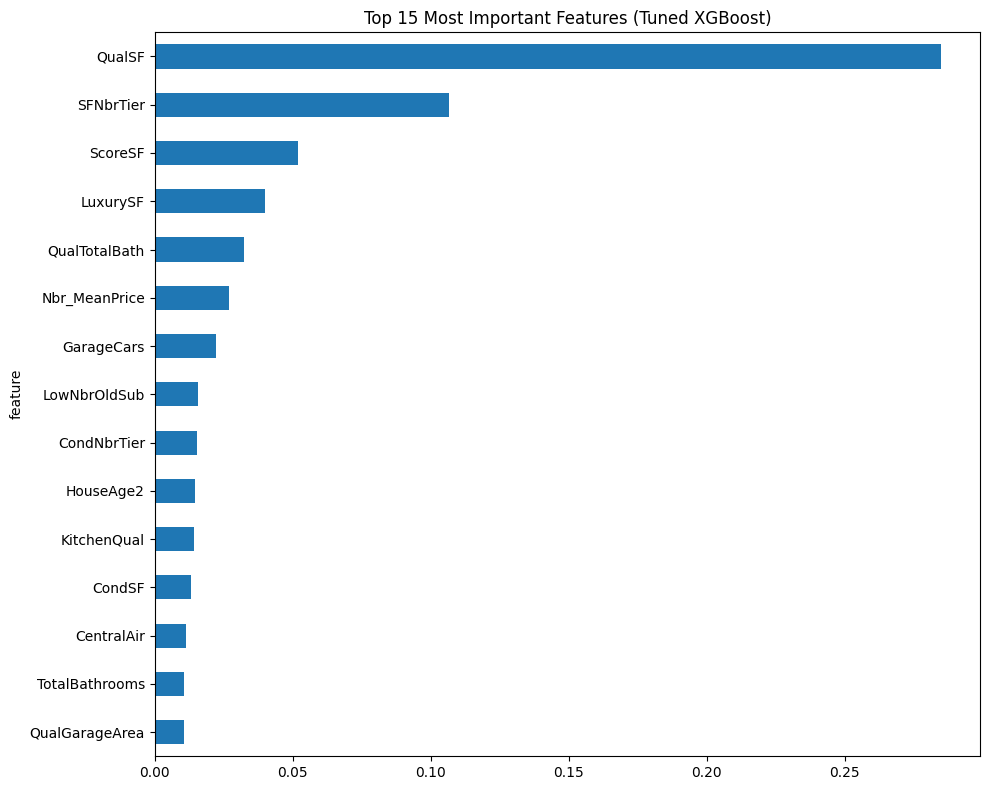
Top 15 features for the tuned XGBoost model. The top of the list is
engineered features, such as overall quality multiplied by total square footage (QualSF).
Method
A separate feature-engineering module that builds interaction features from quality,
size and neighbourhood.
Stratified five-fold cross-validation, with hyperparameters tuned by Optuna.
An error analysis of the houses the model gets most wrong, and of where XGBoost and
LightGBM disagree.
Store sales forecasting (Kaggle)
June 2026 · Python, XGBoost, Optuna, pandas, Parquet
Code on GitHub
Kaggle’s Store Sales competition: forecast daily sales for 1,782 series (54 stores
by 33 product families) of the Ecuadorian grocery chain Favorita over a 16-day horizon.
The model is a single global XGBoost regressor trained on log sales. Its best public
leaderboard score is about 0.402 RMSLE.
Pipeline
Features. A table of about 3.03 million rows by 93 columns: lags from
16 to 365 days, rolling statistics, calendar and payday cycles, holidays, oil price,
and target encodings computed without the last 16 days.Tuning. Optuna over walk-forward folds.Training. Early stopping on the last 15 training days to pick the
number of rounds, then a retrain on everything.Inference. Series that never sold, or sold nothing in the last 28
days, are forced to exactly zero.Validation. A harness that walks forward over four consecutive
16-day windows. Every change is tested there before it is submitted.
Changes that looked good and weren’t
Change What happened
Predicting on an unreferenced QuantileDMatrix Cross-validation 0.40, leaderboard 1.01. The test rows were re-binned independently. A promo feature with a forward-looking window Leaderboard 0.43 to 0.49 Trimming the leading zeros before a product launched Leaderboard 0.40236 to 0.42360 An ensemble with extra features, judged on one hold-out window Better on that window, worse on the leaderboard Blending in a per-series Fourier seasonal model The harness set its weight to zero
The simple global model turned out to be hard to beat. The multi-window harness ranks
candidates in the same order as the leaderboard, so it decides what gets submitted.
SMS spam classifier
March 2026 · Python, NumPy, pandas, matplotlib
Code and notebook on GitHub
A Naive Bayes classifier for SMS spam, written from scratch with a bag-of-words model
and no machine-learning libraries. It is trained on the SMS Spam Collection dataset,
which is left at its natural balance of about 87% ham and 13% spam.
Data Accuracy
Training 98.82% Testing 97.01%
The most common words in spam messages, from the notebook.
How it works
Messages are lowercased and tokenised. URLs and email addresses are replaced with
<URL> and <EMAIL> tokens so they count as one signal.
Two word-frequency dictionaries are built from the training data, one for spam and
one for ham.
Each message gets a spam score and a ham score from Bayes’ theorem, with Laplace
smoothing for unseen words and log probabilities to avoid underflow.
P(Word | Class) = (frequency_word + 1) / (total_words_in_class + unique_words_in_class)
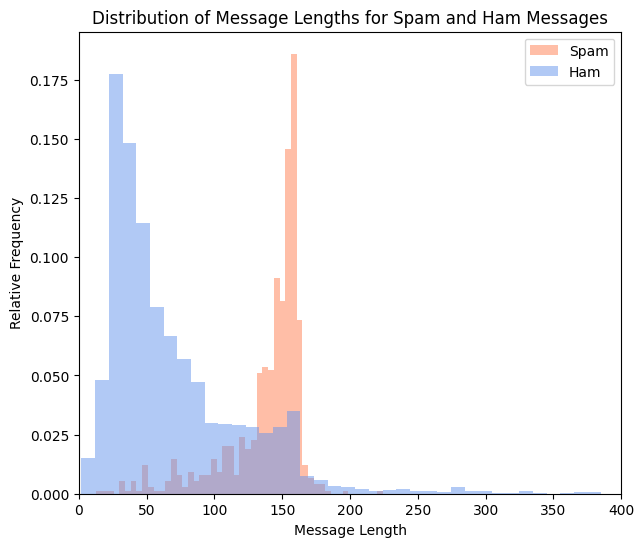
Message lengths. Spam clusters around 150 to 160 characters, while most ham is much shorter.
Clickbait headline classifier
June 2026 · Python, PyTorch, Hugging Face Transformers, scikit-learn, Gradio, pytest
Code on GitHub
Fine-tunes DistilBERT to label news headlines as clickbait or not, using a balanced
dataset of 32,000 headlines. A TF-IDF and logistic regression baseline is scored with the
same metrics for comparison, and a Gradio demo classifies a typed headline or the title
of a pasted URL.
Choices
No lowercasing or punctuation stripping. Much of the clickbait
signal is in the casing and punctuation.Leakage stripping. URLs and publisher tags are removed so the model
learns writing style and not which outlet published a headline.De-duplication before splitting. Duplicates and near-duplicates are
removed first, so none end up on both sides of the train/test boundary.A locked test set. A 70/15/15 stratified split, with the test set
untouched until the final evaluation.
Stages
Each stage is its own command: prepare the splits, train, fit the baseline, evaluate on
the test set, and run an error analysis of false positives and false negatives. The
split and the trainer share one seed, so a run can be reproduced.
FFT from scratch
October 2026 · Python, matplotlib
Code on GitHub
The discrete Fourier transform implemented two ways in plain Python: directly, which takes
O(N²) operations, and as a recursive radix-2 Cooley–Tukey FFT, which takes
O(N log N). Unit tests check that the two agree, a benchmark times them from 16 to 32,768
samples, and the FFT is then used to find the pitch of a recorded tone. A deep dive for
the data structures and algorithms course.
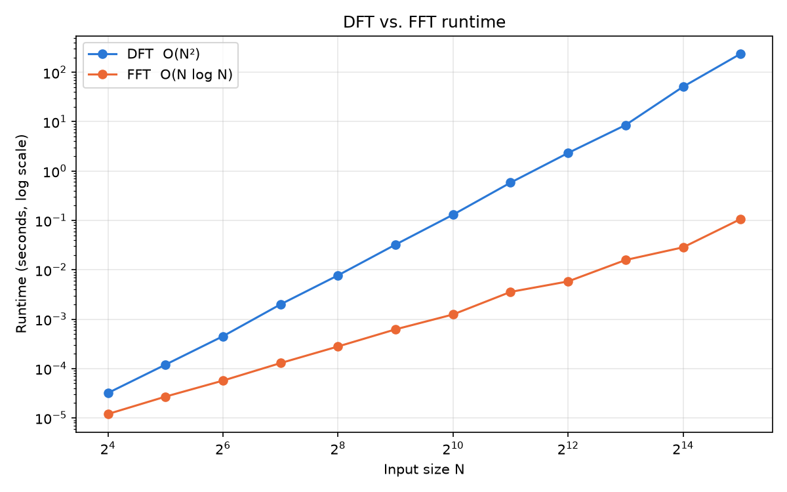
Runtime on a log scale. Each time N doubles, the direct DFT takes about 4 times
as long and the FFT about 2.2 times as long.
Samples DFT FFT FFT speed-up
16 32 µs 12 µs 2.7× 1,024 131 ms 1.2 ms 105× 32,768 238 s 107 ms 2,228×
The speed-up at 32,768 samples is close to the N / log2 N ≈ 2,185 that
the two complexities predict.
The algorithm
The FFT splits the samples into even- and odd-indexed halves and transforms each half
recursively. The two half-size results combine with one complex multiplication per pair
of outputs, because the second half of the twiddle factors are the negatives of the first.
evens: list[complex] = _fft_recursive(x_vals[0::2])
odds: list[complex] = _fft_recursive(x_vals[1::2])
result: list[complex] = [0] * N
for k in range(N // 2):
twiddle: complex = cmath.rect(1, -2*cmath.pi*k/N) * odds[k]
result[k] = evens[k] + twiddle
result[k + N//2] = evens[k] - twiddle
return resultThe butterfly step, from fft.py.
Finding a pitch
The audio example runs the FFT on the first 65,536 samples of a recorded A440 tone, which
is 1.37 s at 48 kHz. The spectrum has one sharp peak at 440.2 Hz, the closest bin to
440 Hz when each bin is 48,000 / 65,536 ≈ 0.73 Hz wide.
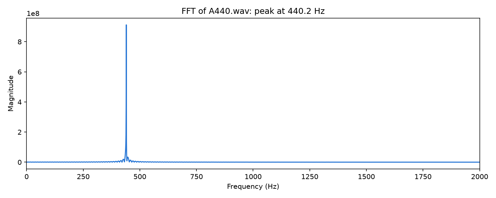
The spectrum of the recording, with its peak at 440.2 Hz.
Data structures and algorithms
September 2026 to present · Python, C++
Code on GitHub
Assignments from a data structures and algorithms course, each with its own tests. The
FFT deep dive is in the same repository.
Meeting conflicts. A conflict checker in C++, written as a naive
O(n²) comparison and again with sorting.Lists, stacks and queues. A doubly linked list, a stack and a queue,
plus stack exercises such as reversing and copying.Graphs. A graph class, a min-priority queue, Dijkstra’s
algorithm, and a maze solver built on them.Sorting. Four sorting algorithms and a timing comparison, below.Matrix multiplication. A square-matrix class with a hybrid Strassen
multiply that recurses on matrices larger than 64 × 64 and uses the conventional
method below that. At n = 1,024 it ran about twice as fast as the conventional
algorithm.Sequence alignment. Smith–Waterman local alignment of DNA
sequences by dynamic programming.
Sorting runtimes
List size Quick sort Check all Merge sort Insertion sort
100 0.07 0.12 0.12 0.15 500 0.37 2.50 0.76 3.46 1,000 0.85 11.72 2.09 17.51 2,000 2.10 43.60 4.14 66.00 5,000 4.81 243.13 10.17 400.06
Average milliseconds over five runs on random integers, from the sorting write-up.
The two O(n²) algorithms roughly quadruple each time the list doubles, and at 5,000
elements they are 50 to 80 times slower than quick sort.